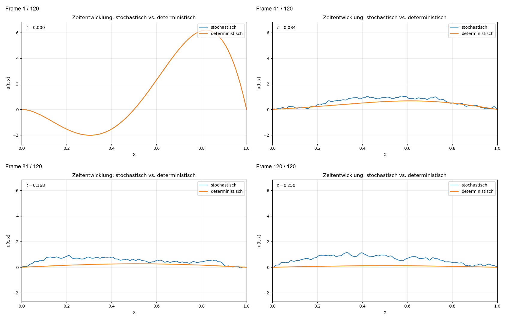

{kind=link}
Note on the use of AI tools.
During the preparation of these notes, AI-assisted tools were used in a supporting role. ChatGPT was used for the linguistic revision of individual formulations and for translation into English. The code used to generate the numerical plots was created with the help of Codex and was subsequently reviewed, adapted, and validated.
1 Introduction
The deterministic heat equation is a basic model for diffusion. On a spatial domain \(\Omega\), the unknown \(u(t,x)\) describes a temperature, concentration, or density. In one space dimension the sign of the second derivative gives a direct intuition for the equation. At a point where the graph is locally concave, \(u_{xx}<0\), so the equation \(u_t=u_{xx}\) makes the value decrease in time. At a point where the graph is locally convex, \(u_{xx}>0\), so the value increases. Peaks are therefore lowered and valleys are filled, which is the basic smoothing effect of heat flow. A derivation from energy balance and Fourier’s law is given in the PDE I notes . In the simplest homogeneous case one obtains \[\partial_t u(t,x)=\Delta u(t,x).\] The role of initial and boundary conditions is also part of this deterministic theory .
In many applications the system is not perfectly deterministic. Random microscopic fluctuations, unresolved forcing, or measurement errors can be modeled by adding noise to the equation. The formal model studied here is \[\partial_t u(t,x)=\partial_{xx}u(t,x)+\dot W(t,x), \qquad x\in(0,1),\quad t>0,\] with homogeneous Dirichlet boundary conditions \[u(t,0)=u(t,1)=0.\] The symbol \(\dot W\) denotes space-time white noise. It is not a classical function and, even as a random distribution, it is not an \(L^2(0,1)\)-valued forcing term. Therefore the equation cannot be understood pointwise in the same sense as a smooth deterministic PDE. One could try to interpret the equation pathwise for fixed \(\omega\) in a distributional sense. In these notes we instead deliberately use the stochastic semigroup formulation, because it is a robust framework for more general SPDEs and is very convenient for numerical analysis: the same formula that defines the solution also leads directly to a convergent spectral algorithm . The goal of these notes is to show how the equation is formulated and solved in the Hilbert space \[H=L^2(0,1),\] and how this formulation directly leads to a practical and convergent numerical method.
The main information is taken from lecture notes for courses held at TU Darmstadt and EPFL. The deterministic heat equation and eigenfunction material are based on the PDE I notes ; the semigroup and abstract Cauchy-problem background is based on the PDE II notes ; the stochastic analysis, Wiener processes in Hilbert spaces, stochastic convolution and additive SPDE framework are based on Del Sarto’s lecture notes . The coordinate-free viewpoint on white noise and stochastic PDEs is taken as supplementary background from Hairer’s EPFL notes . Further standard references used for SPDE theory and numerical SPDEs are .
2 The Deterministic Heat Equation
2.1 Classical formulation
On a smooth domain \(\Omega\subset\mathbb{R}^d\), the inhomogeneous heat equation has the form \[\partial_t u(t,x)=\Delta u(t,x)+f(t,x), \qquad (t,x)\in(0,T]\times\Omega.\] To obtain a well-posed problem one prescribes an initial condition \[u(0,x)=u_0(x)\] and suitable boundary conditions. In this text we use homogeneous Dirichlet conditions on \((0,1)\): \[u(t,0)=u(t,1)=0.\] This is the natural deterministic prototype for the stochastic heat equation treated later.
2.2 Heat flow on the real line
On \(\mathbb{R}^d\), the fundamental solution of the heat equation is \[\Phi(x,t)=\frac{1}{(4\pi t)^{d/2}}\exp\left(-\frac{|x|^2}{4t}\right), \qquad t>0.\] For bounded and continuous initial data \(u_0\), the solution of the Cauchy problem on \(\mathbb{R}^d\) is given by convolution, \[u(t,x)=\int_{\mathbb{R}^d}\Phi(x-y,t)u_0(y)\,\mathrm{d}y.\] This formula illustrates the smoothing effect of the heat equation. Even if the initial data is only moderately regular, the solution becomes smooth for positive times. This smoothing property is also the reason why the stochastic convolution below is well-defined in one spatial dimension. The fundamental solution formula and its smoothing interpretation are standard material from the deterministic heat equation theory in .
2.3 Dirichlet Laplacian on \((0,1)\)
For the interval \((0,1)\), let \[H=L^2(0,1),\qquad \left\langle u,v \right\rangle_H=\int_0^1 u(x)v(x)\,\mathrm{d}x.\] The Dirichlet Laplace operator is \[A=\partial_{xx},\qquad D(A)=H^2(0,1)\cap H_0^1(0,1).\] It is negative self-adjoint and has compact resolvent. In particular, it admits an orthonormal eigenbasis in \(H\). Explicitly, \[e_k(x)=\sqrt{2}\sin(k\pi x), \qquad \lambda_k=(k\pi)^2, \qquad k\in\mathbb{N},\] and \[Ae_k=-\lambda_k e_k.\] Thus every \(v\in H\) has the Fourier expansion \[v=\sum_{k=1}^{\infty} v_k e_k, \qquad v_k=\left\langle v,e_k \right\rangle_H,\] with \[\left\lVert v \right\rVert_H^2=\sum_{k=1}^{\infty}|v_k|^2.\] The general existence of eigenvalues and an orthonormal eigenbasis for the Dirichlet Laplacian on bounded domains is part of the variational theory presented in . The explicit sine basis is the special one-dimensional formula on the interval.
3 Semigroups and Abstract Formulation
3.1 \(C_0\)-semigroups
The deterministic heat equation can be written as an ordinary differential equation on an infinite-dimensional function space. This requires semigroup theory.
Definition 1. Let \(X\) be a Banach space. A family \((S(t))_{t\ge0}\subset\mathcal L(X)\) is called a semigroup if \[S(0)=\mathrm{Id}, \qquad S(t)S(s)=S(t+s) \quad\text{for all }s,t\ge0.\] It is called strongly continuous, or a \(C_0\)-semigroup, if \[\lim_{t\downarrow0}S(t)x=x \qquad\text{for all }x\in X.\]
If \(A\) is the generator of a \(C_0\)-semigroup, then the abstract Cauchy problem \[\frac{\,\mathrm{d}}{\,\mathrm{d}t}u(t)=Au(t), \qquad u(0)=u_0,\] has the solution \[u(t)=S(t)u_0.\] This is the infinite-dimensional analogue of \(u(t)=e^{tA}u_0\) for a matrix \(A\). The definitions and generator results used here are developed in the PDE II notes .
3.2 The heat semigroup
For the Dirichlet Laplacian \(A=\partial_{xx}\) on \(H=L^2(0,1)\), define \[S(t)=e^{tA}.\] Using the eigenbasis \((e_k)_{k\in\mathbb{N}}\), the semigroup acts by \[S(t)v = \sum_{k=1}^{\infty}e^{-\lambda_k t}v_k e_k.\] In particular, \[S(t)e_k=e^{-\lambda_k t}e_k.\] For every \(t\ge0\), \(S(t)\) is a contraction on \(H\): \[\left\lVert S(t)v \right\rVert_H^2 = \sum_{k=1}^{\infty}e^{-2\lambda_k t}|v_k|^2 \le \left\lVert v \right\rVert_H^2.\] The deterministic homogeneous heat equation with Dirichlet boundary conditions can therefore be written as \[u'(t)=Au(t), \qquad u(0)=u_0,\] with solution \[u(t)=S(t)u_0.\]
3.3 Inhomogeneous deterministic equation
Before turning to noise it is useful to recall the deterministic inhomogeneous problem \[u'(t)=Au(t)+f(t), \qquad u(0)=u_0.\] For a deterministic source term \(f\), the variation-of-constants formula gives \[u(t)=S(t)u_0+\int_0^t S(t-s)f(s)\,\mathrm{d}s.\] In PDE notation this corresponds, for example, to \[\partial_t u(t,x)=\partial_{xx}u(t,x)+f(t,x)\] with the same initial and boundary conditions as above. Thus the mild formulation is not a new idea introduced only for stochastic equations; in the deterministic setting it is precisely the variation-of-constants formula from semigroup theory . In the stochastic setting the same formula is used as the guiding analogy, but the deterministic integral is replaced by a stochastic integral with respect to a Wiener process. Giving meaning to this stochastic integral is the next step.
4 Brownian Motion, Wiener Processes and Cylindrical Noise
4.1 Brownian motion
Definition 2. A real-valued stochastic process \((\beta(t))_{t\ge0}\) is a standard Brownian motion if
\(\beta(0)=0\) almost surely,
\(\beta(t)-\beta(s)\sim\mathcal N(0,t-s)\) for \(0\le s<t\),
the increments are independent,
the paths are continuous almost surely.
Brownian motion is also called a Wiener process. It is the basic driving noise for finite-dimensional stochastic differential equations; see .
4.2 Hilbert-space setup
We work on \[H=L^2(0,1)\] with orthonormal basis \[e_k(x)=\sqrt{2}\sin(k\pi x), \qquad k\in\mathbb{N}.\] Let \((\beta_k)_{k\in\mathbb{N}}\) be independent real standard Brownian motions on a filtered probability space \[(\Omega,\mathcal F,(\mathcal F_t)_{t\ge0},\mathbb{P}).\]
4.3 Cylindrical Wiener process
One would like to write \[W(t)=\sum_{k=1}^{\infty}\beta_k(t)e_k.\] However, this series does not converge in \(H\). Indeed, by orthonormality, \[\mathbb{E}\left\lVert W(t) \right\rVert_H^2 = \sum_{k=1}^{\infty}\mathbb{E}|\beta_k(t)|^2 = \sum_{k=1}^{\infty} t = \infty.\] Thus \(W(t)\) is not an \(H\)-valued random variable. This is the main mathematical reason why space-time white noise is singular.
Definition 3. Let \((e_k)_{k\in\mathbb{N}}\) be an orthonormal basis of \(H\) and let \((\beta_k)_{k\in\mathbb{N}}\) be independent real Brownian motions. The formal process \[W(t)=\sum_{k=1}^{\infty}\beta_k(t)e_k\] is called a cylindrical Wiener process on \(H\). Equivalently, it is defined by its action on test functions \(h\in H\): \[W_t(h) = \sum_{k=1}^{\infty}\left\langle h,e_k \right\rangle_H\beta_k(t).\]
For fixed \(h\in H\), this series converges in \(L^2(\Omega)\), since \[\mathbb{E}|W_t(h)|^2 = t\sum_{k=1}^{\infty}|\left\langle h,e_k \right\rangle_H|^2 = t\left\lVert h \right\rVert_H^2.\] Hence \[W_t(h)\sim\mathcal N(0,t\left\lVert h \right\rVert_H^2).\] Moreover, for \(g,h\in H\), \[\begin{aligned} \mathbb{E}\bigl[W_t(h)W_s(g)\bigr] &= \mathbb{E}\left[ \sum_{k=1}^{\infty}\left\langle h,e_k \right\rangle_H\beta_k(t) \sum_{\ell=1}^{\infty}\left\langle g,e_\ell \right\rangle_H\beta_\ell(s) \right] \\ &= \sum_{k,\ell=1}^{\infty} \left\langle h,e_k \right\rangle_H\left\langle g,e_\ell \right\rangle_H \mathbb{E}[\beta_k(t)\beta_\ell(s)] \\ &= (t\wedge s) \sum_{k=1}^{\infty}\left\langle h,e_k \right\rangle_H\left\langle g,e_k \right\rangle_H \\ &= (t\wedge s)\left\langle h,g \right\rangle_H, \end{aligned}\] where independence gives \(\mathbb{E}[\beta_k(t)\beta_\ell(s)]=(t\wedge s)\delta_{k\ell}\), and the last identity is Parseval’s formula. This is the rigorous way to treat the formal series when the covariance operator is the identity. In the terminology of , it is a generalized Wiener process with covariance \(Q=\mathrm{Id}\), hence a cylindrical Wiener process.
Remark 4. Hairer’s notes define this object in a coordinate-free way: \(W_t\) is a Gaussian linear map on test functions such that \[\mathbb{E}[W_t(h)W_s(g)]=(t\wedge s)\left\langle h,g \right\rangle_H\] for all \(g,h\in H\) . The construction in uses an orthonormal basis to realize the same object by the series \(\sum_k\beta_k(t)e_k\). The two viewpoints are equivalent for the present purpose, because the law of \(W_t(h)\) depends only on \(\left\lVert h \right\rVert_H\) and the covariance formula above, not on the particular orthonormal basis used to represent \(h\).
5 The Stochastic Heat Equation as an Abstract SPDE
5.1 Abstract formulation
As in the deterministic case, the starting point is an abstract Cauchy problem. The difference is that the forcing is now random. Formally, the stochastic heat equation becomes a stochastic differential equation on the Hilbert space \(H=L^2(0,1)\). This notation should still be read with care: the time derivative of the driving noise is only a distributional object, and \(W(t)\) itself is cylindrical rather than \(H\)-valued .
Let \[H=L^2(0,1), \qquad A=\partial_{xx}, \qquad D(A)=H^2(0,1)\cap H_0^1(0,1).\] Let \(W\) be a cylindrical Wiener process on \(H\). The stochastic heat equation with additive space-time white noise is formally \[\,\mathrm{d}u(t)=Au(t)\,\mathrm{d}t+\,\mathrm{d}W_t, \qquad u(0)=u_0.\] In PDE notation this corresponds to \[\partial_t u(t,x)=\partial_{xx}u(t,x)+\dot W(t,x), \qquad x\in(0,1),\quad t>0,\] with boundary conditions \[u(t,0)=u(t,1)=0.\]
5.2 Why the classical formulation is not sufficient
There are two related obstacles. First, the cylindrical Wiener process \(W(t)\) is not an \(H\)-valued random variable. Second, the formal derivative \(\dot W(t,x)\) is not a classical function but only a distributional symbol. Consequently, the expression \[Au(t)+\dot W(t)\] is not meaningful as an \(H\)-valued classical right-hand side. One therefore does not first search for a pointwise differentiable solution. The appropriate object is a mild solution, obtained by integrating the equation against the heat semigroup .
6 Mild Solutions
Let \(S(t)=e^{tA}\) be the heat semigroup generated by \(A\).
6.1 Stochastic integral with cylindrical noise
Because \(W\) is cylindrical rather than \(H\)-valued, not every bounded operator can be integrated against \(W\). The smoothing of the heat semigroup enters through the Hilbert-Schmidt norm. If \(B\in\mathcal L(H)\), then \[\left\lVert B \right\rVert_{\mathrm{HS}}^2 = \sum_{k=1}^{\infty}\left\lVert Be_k \right\rVert_H^2\] whenever this sum is finite. The value is independent of the chosen orthonormal basis. Such operators are called Hilbert-Schmidt operators; this is the operator class used to integrate against cylindrical Wiener processes .
For a deterministic operator-valued function \(\Phi:[0,t]\to\mathcal L(H)\) satisfying \[\int_0^t\left\lVert \Phi(s) \right\rVert_{\mathrm{HS}}^2\,\mathrm{d}s<\infty,\] the stochastic integral is defined by the \(L^2(\Omega;H)\)-limit \[\int_0^t \Phi(s)\,\mathrm{d}W_s = \lim_{M\to\infty} \sum_{k=1}^{M}\int_0^t \Phi(s)e_k\,\mathrm{d}\beta_k(s).\] The Ito isometry for cylindrical noise, stated in Appendix 11, gives \[\mathbb{E}\left\|\int_0^t \Phi(s)\,\mathrm{d}W_s\right\|_H^2 = \int_0^t\left\lVert \Phi(s) \right\rVert_{\mathrm{HS}}^2\,\mathrm{d}s.\]
Remark 5. For random integrands one also requires the usual measurability and adaptedness, or predictability, assumptions so that the integrand only uses information available up to the current time. In the linear additive equation treated here the integrand \(S(t-s)\) is deterministic, so this issue is harmless. It becomes essential for multiplicative noise.
Remark 6. Hairer’s notes often formulate stochastic integrals and white noise without choosing a distinguished orthonormal basis, starting instead from Gaussian families indexed by test functions . The basis construction above is the concrete Hilbert-space version used in . The definitions agree because the resulting integrals have the same covariance structure, as expressed by the Ito isometry.
6.2 Definition
Definition 7. An \(H\)-valued adapted process \((u(t))_{t\ge0}\) is called a mild solution of the stochastic heat equation if, for every \(t\ge0\), \[u(t) = S(t)u_0 + \int_0^t S(t-s)\,\mathrm{d}W_s.\] The stochastic integral \[\int_0^t S(t-s)\,\mathrm{d}W_s\] is called the stochastic convolution.
This formula is the stochastic analogue of the deterministic variation-of-constants formula. The stochastic convolution is the central object in the theory of linear SPDEs with additive noise; see .
Remark 8. For the linear additive equation, the weak and mild formulations are equivalent under the standard assumptions on \(A\), \(S(t)\), \(u_0\), and the stochastic convolution . The mild formulation is the natural one for this numerical seminar because it takes the variation-of-constants formula as the definition of the solution and leads immediately to the spectral Galerkin method below. Weak formulations are often more intrinsic analytically, but they are less direct for implementing the modal approximation.
7 Spectral Decomposition and Existence of the Solution
7.1 Fourier representation
Write \[u_0=\sum_{k=1}^{\infty}u_{0,k}e_k, \qquad u_{0,k}=\left\langle u_0,e_k \right\rangle_H.\] The deterministic part is \[S(t)u_0 = \sum_{k=1}^{\infty}e^{-\lambda_k t}u_{0,k}e_k.\] For the stochastic convolution, the definition of the integral with respect to the cylindrical Wiener process gives \[\begin{aligned} \int_0^t S(t-s)\,\mathrm{d}W_s &= \lim_{M\to\infty} \sum_{k=1}^{M} \int_0^t S(t-s)e_k\,\mathrm{d}\beta_k(s) \\ &= \lim_{M\to\infty} \sum_{k=1}^{M} \left(\int_0^t e^{-\lambda_k(t-s)}\,\mathrm{d}\beta_k(s)\right)e_k, \end{aligned}\] where the convergence is in \(L^2(\Omega;H)\). Hence the mild solution has the spectral representation \[u(t) = \sum_{k=1}^{\infty} \left( e^{-\lambda_k t}u_{0,k} + \int_0^t e^{-\lambda_k(t-s)}\,\mathrm{d}\beta_k(s) \right)e_k.\] Equivalently, if \(u(t)=\sum_k u_k(t)e_k\), then comparison of the Fourier coefficients gives \[u_k(t) = e^{-\lambda_k t}u_{0,k} + \int_0^t e^{-\lambda_k(t-s)}\,\mathrm{d}\beta_k(s).\] This is exactly the mild form of the scalar Ornstein–Uhlenbeck equation \[\,\mathrm{d}u_k(t)=-\lambda_k u_k(t)\,\mathrm{d}t+\,\mathrm{d}\beta_k(t), \qquad u_k(0)=u_{0,k}.\] The mode-wise interpretation is standard for linear additive SPDEs diagonalized by the generator eigenbasis .
7.2 Existence theorem
Theorem 9 (Existence of the mild solution in \(L^2(0,1)\)). Let \(H=L^2(0,1)\), let \(A=\partial_{xx}\) with homogeneous Dirichlet boundary conditions, and let \(W\) be a cylindrical Wiener process on \(H\). For every \(u_0\in H\) and every \(t>0\), \[u(t)=S(t)u_0+\int_0^t S(t-s)\,\mathrm{d}W_s\] is a well-defined \(H\)-valued random variable. Moreover, \[\mathbb{E}\left\lVert u(t) \right\rVert_H^2<\infty.\]
Proof. Step 1: well-defined deterministic and stochastic terms. The deterministic term is well-defined since \(S(t)\) is a contraction on \(H\): \[\left\lVert S(t)u_0 \right\rVert_H\le \left\lVert u_0 \right\rVert_H.\] For the stochastic term we check the Hilbert-Schmidt condition. Since \(S(r)e_k=e^{-\lambda_k r}e_k\), \[\left\lVert S(r) \right\rVert_{\mathrm{HS}}^2 = \sum_{k=1}^{\infty}\left\lVert S(r)e_k \right\rVert_H^2 = \sum_{k=1}^{\infty}e^{-2\lambda_k r}.\] Therefore \[\int_0^t\left\lVert S(r) \right\rVert_{\mathrm{HS}}^2\,\mathrm{d}r = \sum_{k=1}^{\infty}\int_0^t e^{-2\lambda_k r}\,\mathrm{d}r = \sum_{k=1}^{\infty}\frac{1-e^{-2\lambda_k t}}{2\lambda_k}.\] Since \(\lambda_k=(k\pi)^2\), \[\sum_{k=1}^{\infty}\frac{1}{\lambda_k} = \frac{1}{\pi^2}\sum_{k=1}^{\infty}\frac{1}{k^2} <\infty.\] Thus \(\int_0^t S(t-s)\,\mathrm{d}W_s\) is well-defined as an \(H\)-valued stochastic integral.
Step 2: second-moment estimate. Define \[Z(t)=\int_0^t S(t-s)\,\mathrm{d}W_s = \sum_{k=1}^{\infty} \left( \int_0^t e^{-\lambda_k(t-s)}\,\mathrm{d}\beta_k(s) \right)e_k.\] By the Ito isometry, \[\mathbb{E}\left| \int_0^t e^{-\lambda_k(t-s)}\,\mathrm{d}\beta_k(s) \right|^2 = \int_0^t e^{-2\lambda_k(t-s)}\,\mathrm{d}s = \frac{1-e^{-2\lambda_k t}}{2\lambda_k}.\] Therefore \[\mathbb{E}\left\lVert Z(t) \right\rVert_H^2 = \sum_{k=1}^{\infty} \frac{1-e^{-2\lambda_k t}}{2\lambda_k} \le \frac12\sum_{k=1}^{\infty}\frac{1}{\lambda_k} <\infty.\] The convergence of the series follows from \(\lambda_k=(k\pi)^2\).
Step 3: combination and uniqueness. Since the stochastic convolution is centered, the deterministic and stochastic parts give \[\mathbb{E}\left\lVert u(t) \right\rVert_H^2 = \left\lVert S(t)u_0 \right\rVert_H^2 + \mathbb{E}\left\lVert Z(t) \right\rVert_H^2 <\infty.\] The mild solution is unique in this class, because the formula determines all Fourier coefficients uniquely; equivalently, each coefficient is the unique solution of its scalar Ornstein–Uhlenbeck equation. This is the standard linear additive SPDE uniqueness argument . ◻
Remark 10 (Spatial regularity). The same computation also shows the limited spatial regularity caused by white noise. For \(u_0=0\) and \(\gamma\ge0\), \[\mathbb{E}\left\lVert (-A)^\gamma Z(t) \right\rVert_H^2 = \sum_{k=1}^{\infty} \lambda_k^{2\gamma} \frac{1-e^{-2\lambda_k t}}{2\lambda_k}.\] Since \(\lambda_k=(k\pi)^2\), the summand behaves like \(k^{4\gamma-2}\). The series is finite precisely for \(\gamma<1/4\). Thus the stochastic part is in \(D((-A)^\gamma)\) for every \(\gamma<1/4\), but in general not for \(\gamma\ge1/4\). In Sobolev language this corresponds to spatial regularity strictly below \(H^{1/2}(0,1)\). This regularity threshold is a standard feature of the one-dimensional stochastic heat equation with additive white noise .
Remark 11 (Higher spatial dimensions). On a bounded domain in dimension \(d\), the proof changes at exactly the point where the eigenvalue sum is estimated. By Weyl’s law, \(\lambda_j\sim Cj^{2/d}\). The condition for an \(L^2\)-valued stochastic convolution with space-time white noise becomes \[\sum_{j=1}^{\infty}\frac1{\lambda_j}<\infty,\] which holds only for \(d=1\). In \(d=2\) the corresponding series behaves like \(\sum_j j^{-1}\) and diverges logarithmically; for \(d\ge3\) it diverges even more strongly. Thus the one-dimensional proof does not extend to an \(L^2\)-valued solution driven by spatially white noise in higher dimensions. One then has to use spatially colored noise, weaker distribution-valued solution spaces, or, for singular nonlinear equations, renormalization .
8 Numerical Simulation and Convergence
8.1 Spectral Galerkin approximation
The numerical idea is to approximate the infinite Fourier expansion by keeping only the first \(N\) eigenfunctions. This replaces the infinite-dimensional SPDE by a finite-dimensional system of \(N\) stochastic differential equations. In the sine basis these equations are decoupled, because the basis diagonalizes the operator \(A\). For \(N\in\mathbb{N}\), the Galerkin space is \[H_N=\operatorname{span}\{e_1,\dots,e_N\}\] and let \(P_N:H\to H_N\) be the orthogonal projection \[P_Nv=\sum_{k=1}^{N}\left\langle v,e_k \right\rangle_H e_k.\] The spectral Galerkin approximation is \[\,\mathrm{d}u^N(t)=A_Nu^N(t)\,\mathrm{d}t+P_N\,\mathrm{d}W_t, \qquad u^N(0)=P_Nu_0,\] where \(A_N=P_NA\). Its mild solution is \[u^N(t) = S(t)P_Nu_0 + \int_0^t S(t-s)P_N\,\mathrm{d}W_s.\] Equivalently, \[u^N(t,x)=\sum_{k=1}^{N}u_k(t)e_k(x),\] where \[\,\mathrm{d}u_k(t)=-\lambda_k u_k(t)\,\mathrm{d}t+\,\mathrm{d}\beta_k(t), \qquad k=1,\dots,N.\]
8.2 Convergence theorem for spectral truncation
Theorem 12 (Mean-square convergence of spectral Galerkin approximation). Let \(u(t)\) be the mild solution of the stochastic heat equation on \((0,1)\), and let \(u^N(t)\) be its spectral Galerkin approximation. Then for every \(t>0\), \[\mathbb{E}\left\lVert u(t)-u^N(t) \right\rVert_H^2\longrightarrow0 \qquad\text{as }N\to\infty.\] If additionally \(u_0\in D((-A)^\alpha)\) for some \(\alpha>0\), then \[\mathbb{E}\left\lVert u(t)-u^N(t) \right\rVert_H^2 \le C\lambda_{N+1}^{-2\alpha}\left\lVert (-A)^\alpha u_0 \right\rVert_H^2 + C\sum_{k=N+1}^{\infty}\frac1{\lambda_k}.\] In particular, since \(\lambda_k=(k\pi)^2\), \[\sum_{k=N+1}^{\infty}\frac1{\lambda_k} \le \frac{1}{\pi^2N},\] and \(\lambda_{N+1}^{-2\alpha}\le C N^{-4\alpha}\). Hence \[\mathbb{E}\left\lVert u(t)-u^N(t) \right\rVert_H^2 \le C N^{-4\alpha}\left\lVert (-A)^\alpha u_0 \right\rVert_H^2 + C N^{-1}.\] For \(u_0=0\), or if only the stochastic truncation part is considered, the corresponding \(L^2(\Omega;H)\)-error is of order \(N^{-1/2}\).
Proof. Since \(P_N\) commutes with \(S(t)\) in the eigenbasis, we write \[u(t)-u^N(t) = S(t)(I-P_N)u_0 + \int_0^t S(t-s)(I-P_N)\,\mathrm{d}W_s.\] We now estimate the deterministic and stochastic parts separately.
Step 1: convergence of the deterministic part. Write \[u_0=\sum_{k=1}^{\infty}u_{0,k}e_k.\] Then \[S(t)(I-P_N)u_0 = \sum_{k=N+1}^{\infty}e^{-\lambda_k t}u_{0,k}e_k,\] and therefore \[\left\lVert S(t)(I-P_N)u_0 \right\rVert_H^2 = \sum_{k=N+1}^{\infty}e^{-2\lambda_k t}|u_{0,k}|^2 \longrightarrow0.\] The convergence follows because the right-hand side is the tail of a convergent nonnegative series dominated by \(\sum_{k=1}^{\infty}|u_{0,k}|^2=\left\lVert u_0 \right\rVert_H^2\).
Step 2: rate for the deterministic part. If \(u_0\in D((-A)^\alpha)\), then by the \(\ell^2\)-norm of the Fourier coefficients of \((-A)^\alpha u_0\), \[\sum_{k=1}^{\infty}\lambda_k^{2\alpha}|u_{0,k}|^2<\infty.\] For \(k>N\), the eigenvalues are increasing and therefore \(\lambda_k\ge\lambda_{N+1}\). Hence \[1\le \lambda_{N+1}^{-2\alpha}\lambda_k^{2\alpha},\] which implies \[|u_{0,k}|^2 \le \lambda_{N+1}^{-2\alpha}\lambda_k^{2\alpha}|u_{0,k}|^2.\] Thus \[\left\lVert S(t)(I-P_N)u_0 \right\rVert_H^2 \le \lambda_{N+1}^{-2\alpha} \left\lVert (-A)^\alpha u_0 \right\rVert_H^2.\]
Step 3: convergence and rate for the stochastic part. By the Ito isometry for cylindrical noise from Appendix 11, \[\mathbb{E}\left\| \int_0^t S(t-s)(I-P_N)\,\mathrm{d}W_s \right\|_H^2 = \int_0^t \left\lVert S(t-s)(I-P_N) \right\rVert_{\mathrm{HS}}^2\,\mathrm{d}s.\] For \(r>0\), \[S(r)(I-P_N)e_k = \begin{cases} 0, & k\le N,\\ e^{-\lambda_k r}e_k, & k>N. \end{cases}\] Therefore \[\left\lVert S(r)(I-P_N) \right\rVert_{\mathrm{HS}}^2 = \sum_{k=N+1}^{\infty}e^{-2\lambda_k r}.\] It follows that \[\int_0^t \sum_{k=N+1}^{\infty}e^{-2\lambda_k r}\,\mathrm{d}r = \sum_{k=N+1}^{\infty} \frac{1-e^{-2\lambda_k t}}{2\lambda_k} \le \frac12\sum_{k=N+1}^{\infty}\frac1{\lambda_k}.\] Since \[\sum_{k=N+1}^{\infty}\frac1{\lambda_k} = \frac1{\pi^2}\sum_{k=N+1}^{\infty}\frac1{k^2} \le \frac1{\pi^2}\int_N^\infty \frac{\,\mathrm{d}x}{x^2} = \frac1{\pi^2N},\] the stochastic truncation error tends to zero and satisfies the bound \[\mathbb{E}\left\| \int_0^t S(t-s)(I-P_N)\,\mathrm{d}W_s \right\|_H^2 \le \frac{1}{2\pi^2N}.\]
Step 4: combination of the errors. Finally, \[\left\lVert a+b \right\rVert_H^2\le2\left\lVert a \right\rVert_H^2+2\left\lVert b \right\rVert_H^2\] gives \[\mathbb{E}\left\lVert u(t)-u^N(t) \right\rVert_H^2 \le 2\left\lVert S(t)(I-P_N)u_0 \right\rVert_H^2 + 2\mathbb{E}\left\| \int_0^t S(t-s)(I-P_N)\,\mathrm{d}W_s \right\|_H^2.\] Both terms converge to zero. The quantitative estimate follows from the two bounds above. ◻
Remark 13 (Higher-dimensional convergence). As explained in the previous remark on higher spatial dimensions, the eigenvalue sum \(\sum_j\lambda_j^{-1}\) diverges for spatially white noise when \(d\ge2\). Therefore the stochastic convolution is not \(L^2\)-valued in that case, and the above \(L^2(\Omega;H)\)-convergence proof does not carry over directly. One must first change the setting, for example by using colored noise or weaker solution spaces .
8.3 Time discretization
For each mode \(k\le N\), the Galerkin system contains the scalar SDE \[\,\mathrm{d}u_k(t)=-\lambda_k u_k(t)\,\mathrm{d}t+\,\mathrm{d}\beta_k(t).\] Starting from this finite-dimensional SDE system, one would normally continue with a time-stepping method such as Euler–Maruyama, \[u_k^{n+1} = u_k^n-\lambda_k u_k^n\Delta t+\Delta\beta_k^n, \qquad \Delta\beta_k^n\sim\mathcal N(0,\Delta t).\] In the present linear additive problem, however, the exact solution of each mode is known. Therefore the simpler and more accurate approach is to use the exact Ornstein–Uhlenbeck transition \[u_k(t_{n+1}) = e^{-\lambda_k\Delta t}u_k(t_n)+\eta_k^n,\] where \[\eta_k^n \sim \mathcal N\left( 0, \frac{1-e^{-2\lambda_k\Delta t}}{2\lambda_k} \right).\] The random variables \(\eta_k^n\) are independent for different \(k\) and \(n\). Thus the simulation is exact in time for the finite-dimensional Galerkin SPDE.
8.4 Convergence with exact time stepping
If the exact Ornstein–Uhlenbeck transition is used, then on the grid \[t_n=n\Delta t\] there is no time discretization error for the finite-dimensional Galerkin system. The only mathematical approximation error relative to the full SPDE is the spectral truncation error: \[u(t_n)-u^N(t_n).\] Consequently, the convergence theorem above fully describes the discretization error of the implemented method at grid times.
8.5 Implementation outline
For fixed \(N\), final time \(T\), time step \(\Delta t\), and grid \(t_n=n\Delta t\), the simulation can be implemented as follows.
Compute \(\lambda_k=(k\pi)^2\) for \(k=1,\dots,N\).
Compute the initial Fourier coefficients \[u_{0,k}=\int_0^1 u_0(x)e_k(x)\,\mathrm{d}x.\]
For every time step and every mode, draw \[\eta_k^n\sim \mathcal N\left(0,\frac{1-e^{-2\lambda_k\Delta t}}{2\lambda_k}\right).\]
Update \[u_k^{n+1}=e^{-\lambda_k\Delta t}u_k^n+\eta_k^n.\]
Reconstruct the physical-space approximation by \[u^N(t_n,x)=\sum_{k=1}^{N}u_k^n e_k(x).\]
9 Numerical Results
This section reports a reproducible numerical experiment computed with the spectral Ornstein–Uhlenbeck simulation described above. The path generation and error computation code used for the table is included in Appendix 12. The numerical method follows the exact modal transition from the previous subsection and the standard spectral Galerkin viewpoint from .
9.1 Reference experiment
A simple test case is \[u_0=0,\qquad T=1.\] For each \(N\), simulate \(M\) independent paths of \(u^N(T)\). To estimate the spectral error, use a larger reference dimension \(N_{\mathrm{ref}}\gg N\) and drive both approximations with the same Brownian modes for \(k\le N\). Then \[\left( \frac1M\sum_{m=1}^{M} \left\lVert u^{N_{\mathrm{ref}},(m)}(T)-u^{N,(m)}(T) \right\rVert_H^2 \right)^{1/2}\] estimates the root mean-square error. The experiment below uses \[M=10000,\qquad N_{\mathrm{ref}}=4096, \qquad \text{random seed }271828.\]
The theory predicts approximately \[\left(\mathbb{E}\left\lVert u(T)-u^N(T) \right\rVert_H^2\right)^{1/2} \sim N^{-1/2}\] for the stochastic truncation part.
| \(N\) | empirical RMS error | estimated rate |
|---|---|---|
| \(8\) | \(0.077158\) | – |
| \(16\) | \(0.055312\) | \(0.480\) |
| \(32\) | \(0.039370\) | \(0.490\) |
| \(64\) | \(0.027804\) | \(0.502\) |
| \(128\) | \(0.019552\) | \(0.508\) |
9.2 Energy check
For \(u_0=0\), the exact modal variance is \[\mathbb{E}|u_k(t)|^2 = \frac{1-e^{-2\lambda_k t}}{2\lambda_k}.\] Therefore \[\mathbb{E}\left\lVert u^N(t) \right\rVert_H^2 = \sum_{k=1}^{N} \frac{1-e^{-2\lambda_k t}}{2\lambda_k}.\] This identity is a useful verification tool for simulations. The empirical average of \(\left\lVert u^N(t) \right\rVert_H^2\) over many paths should be close to the above sum. In the same experiment, for \(N=128\) and \(T=1\), the empirical value was \[0.082170,\] while the theoretical value of the finite-dimensional energy sum was \[0.082939.\] The relative deviation is about \(0.93\%\), which is consistent with Monte Carlo sampling error.
9.3 Snapshot from the animation
For the displayed paths we use the smooth polynomial initial condition \[u_0(x)=10\bigl(-y^4-y^3+y^2+y\bigr), \qquad y=2(x-1/2).\] This function is \(C^\infty\), so the deterministic projection error decays faster than the stochastic truncation error. The observed root mean-square convergence is therefore governed by the stochastic part and follows the \(N^{-1/2}\) rate predicted in the theorem above. In Figure 1, the orange curve is the deterministic heat flow with this initial condition, while the blue curve is one stochastic realization. The comparison illustrates that the heat semigroup damps the deterministic profile, whereas the stochastic solution keeps receiving random high-frequency input.

9.4 Expected qualitative behavior
The numerical solution is rough in space because the driving noise is white in space and time. Nevertheless, the heat semigroup smooths the noise enough that the solution is \(L^2(0,1)\)-valued in one spatial dimension. Increasing \(N\) adds more high-frequency oscillations. Their total contribution to the mean-square \(L^2\)-error decreases like \(N^{-1}\), which corresponds to \(N^{-1/2}\) in root mean square.
10 Outlook
In this project we considered the linear stochastic heat equation with additive space-time white noise. In this special situation the spectral Galerkin approximation leads to independent Ornstein–Uhlenbeck modes. These modes can be simulated exactly, so that no genuine time-discretization error is introduced. The numerical error studied here is therefore essentially the spectral truncation error.
This is a rather favourable situation. For more general SPDEs, one usually has to discretize time as well. For example, for semilinear equations of the form \[\,\mathrm{d}u(t) = \bigl(Au(t)+F(u(t))\bigr)\,\mathrm{d}t + \,\mathrm{d}W_t,\] the Galerkin system is no longer a collection of independent Ornstein–Uhlenbeck processes. One therefore typically combines a spatial discretization with time-stepping schemes such as Euler–Maruyama, semi-implicit Euler methods, or exponential integrators. The convergence analysis then has to control both the spatial truncation error and the time-discretization error.
A further difficulty appears for multiplicative noise, for instance in equations of the form \[\,\mathrm{d}u(t) = \bigl(Au(t)+F(u(t))\bigr)\,\mathrm{d}t + G(u(t))\,\mathrm{d}W_t .\] Here the stochastic integral depends on the solution itself. Thus the noise is no longer merely an additive forcing term, but interacts directly with the solution. If the driving noise is very rough, the solution may itself have only distributional regularity. In such cases products like \(G(u)\xi\), where \(\xi\) denotes space-time white noise, are not necessarily classically defined. This is one of the central analytical difficulties in singular SPDEs.
In higher spatial dimensions this problem becomes even more pronounced, since space-time white noise is rougher and the stochastic convolution has lower spatial regularity. Depending on the equation, one may therefore need colored noise, weaker solution concepts, renormalization techniques, or modern theories such as rough paths, paracontrolled distributions, or regularity structures.
Thus the main rigorous message of this seminar is the following: in the linear additive one-dimensional case, the stochastic heat equation can be formulated as an abstract SPDE, solved in mild form, represented by independent Ornstein–Uhlenbeck modes, and approximated by a spectral Galerkin method with a transparent mean-square convergence proof. At the same time, this example also indicates why nonlinear, multiplicative, or higher-dimensional SPDEs require substantially more advanced analytical and numerical tools.
11 Ito Isometry for Cylindrical Noise
The following form of the Ito isometry is the basic tool used in the existence and convergence proofs. It is standard in the Hilbert-space theory of stochastic integration; see .
Theorem 14 (Ito isometry for deterministic Hilbert-Schmidt integrands). Let \(W\) be a cylindrical Wiener process on a Hilbert space \(H\), represented by \[W(t)=\sum_{k=1}^{\infty}\beta_k(t)e_k.\] Let \(\Phi:[0,T]\to\mathcal L(H)\) be strongly measurable and satisfy \[\int_0^T\left\lVert \Phi(s) \right\rVert_{\mathrm{HS}}^2\,\mathrm{d}s<\infty.\] Then \[\int_0^T\Phi(s)\,\mathrm{d}W_s := \lim_{M\to\infty} \sum_{k=1}^{M}\int_0^T\Phi(s)e_k\,\mathrm{d}\beta_k(s)\] exists in \(L^2(\Omega;H)\), and \[\mathbb{E}\left\|\int_0^T\Phi(s)\,\mathrm{d}W_s\right\|_H^2 = \int_0^T\left\lVert \Phi(s) \right\rVert_{\mathrm{HS}}^2\,\mathrm{d}s.\]
12 Python Code for Paths and Error Computation
The following code contains only the path generation and error computation used for the numerical experiment. Plotting code is omitted.
from __future__ import annotations
from dataclasses import dataclass
import numpy as np
Array = np.ndarray
@dataclass(frozen=True)
class SimulationConfig:
n_modes: int = 96
final_time: float = 0.25
n_time_steps: int = 250
seed: int | None = 1234
@property
def dt(self) -> float:
return self.final_time / self.n_time_steps
def eigenvalues(n_modes: int) -> Array:
k = np.arange(1, n_modes + 1, dtype=float)
return (np.pi * k) ** 2
def time_grid(final_time: float, n_time_steps: int) -> Array:
return np.linspace(0.0, final_time, n_time_steps + 1)
def ou_step_parameters(lambdas: Array, dt: float) -> tuple[Array, Array]:
decay = np.exp(-lambdas * dt)
variance = -np.expm1(-2.0 * lambdas * dt) / (2.0 * lambdas)
return decay, np.sqrt(variance)
def simulate_fourier_modes(
config: SimulationConfig,
initial_coefficients: Array | None = None,
) -> tuple[Array, Array]:
rng = np.random.default_rng(config.seed)
lambdas = eigenvalues(config.n_modes)
decay, innovation_std = ou_step_parameters(lambdas, config.dt)
times = time_grid(config.final_time, config.n_time_steps)
coeffs = np.empty((config.n_time_steps + 1, config.n_modes), dtype=float)
if initial_coefficients is None:
coeffs[0] = np.zeros(config.n_modes)
else:
coeffs[0] = np.asarray(initial_coefficients, dtype=float)
for n in range(config.n_time_steps):
noise = rng.normal(loc=0.0, scale=innovation_std, size=config.n_modes)
coeffs[n + 1] = decay * coeffs[n] + noise
return times, coeffs
def rms_error_table(
n_values: Array = np.array([8, 16, 32, 64, 128]),
n_ref: int = 4096,
n_paths: int = 10000,
final_time: float = 1.0,
seed: int = 271828,
chunk_size: int = 1000,
) -> list[tuple[int, float, float | None]]:
rng = np.random.default_rng(seed)
lambdas = eigenvalues(n_ref)
variances = -np.expm1(-2.0 * lambdas * final_time) / (2.0 * lambdas)
std = np.sqrt(variances)
error_sq_sums = np.zeros(len(n_values))
for start in range(0, n_paths, chunk_size):
m = min(chunk_size, n_paths - start)
coeffs = rng.normal(loc=0.0, scale=std, size=(m, n_ref))
tail_sq = np.cumsum(coeffs[:, ::-1] ** 2, axis=1)[:, ::-1]
for j, n_modes in enumerate(n_values):
error_sq_sums[j] += np.sum(tail_sq[:, n_modes])
rms = np.sqrt(error_sq_sums / n_paths)
rates: list[float | None] = [None]
for j in range(1, len(n_values)):
rate = np.log(rms[j - 1] / rms[j]) / np.log(n_values[j] / n_values[j - 1])
rates.append(float(rate))
return [(int(n), float(e), r) for n, e, r in zip(n_values, rms, rates)]
if __name__ == "__main__":
for n_modes, error, rate in rms_error_table():
if rate is None:
print(f"{n_modes:4d} {error:.6f} --")
else:
print(f"{n_modes:4d} {error:.6f} {rate:.3f}")9
Gianmarco Del Sarto. Stochastic Equations with Applications to Climate Sciences. Lecture notes, TU Darmstadt, Winter Semester 2025–2026.
Christian Stinner. Partial Differential Equations I. Lecture notes, Winter term 2025/26, April 14, 2026.
Christian Stinner. Partial Differential Equations II. Lecture notes, Summer term 2021, May 12, 2026.
Giuseppe Da Prato and Jerzy Zabczyk. Stochastic Equations in Infinite Dimensions. Cambridge University Press, 1992.
Gabriel J. Lord, Catherine E. Powell, and Tony Shardlow. An Introduction to Computational Stochastic PDEs. Cambridge University Press, 2014.
Martin Hairer. An Introduction to Stochastic PDEs. Lecture notes, 2009. Available as arXiv:0907.4178 and from https://www.hairer.org/notes/SPDEs_Course.pdf.